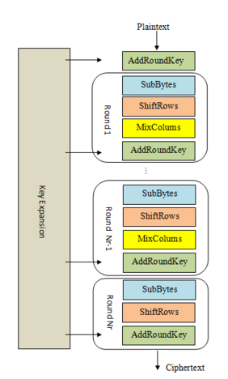

This challenge implements a Diffie-Hellman key exchange on 2 entities: Alice and Byron. After the process, both entities agree on a session ke $SK$, which is used as key for AES-CTR for communication phase.
In communication phase, all messages are encrypted with AES-CTR. Alice and Byron, whose secret is $s_A$ and $s_B$ respectively, have specific responses to different type of messages:
In Pigeon Post (1), we can intercept the key exchange phase and thus can perform a man-in-the-middle attack. This challenge patches that vulnerability by only allowing us to intercept the communication phase.
Since Alice sends Byron a done! message after Finish Handshake step, we can recover the encrypted flag as follow:
Send done! to Byron -> Obtain what is the flag? I have the secret + $s_B$
Send what is the flag? I have the secret + $s_B$ to Alice -> Obtain the flag is + $s_A$
Notice that when we send a message that starts with the flag is , Byron only check whether the suffix matches hkcert24{.*}, this means that both hkcert24{MystizIsMyIdol} and hkcert24{} satisfy the regex. But how can we use this information up to our advantage?
Denote $KS$ as the keystream generated by AES-CTR, we have:
$$ct = Enc(SK, pt) = KS \oplus pt$$$$Dec(SK, ct \oplus b) = KS \oplus ct \oplus b = pt \oplus b$$
Utilizing this property, we can recover the flag byte-by-byte by just enumerating all 256 possibilities and checking when Byron replies with nice flag!.
A problem here is that both nice flag! and too bad... messages have same length, therefore we cannot distinguish those based on their length. To overcome this, we just need to forward the resonpse to Alice and observe the Alice’s response length, since the responses correspond with these 2 messages have different lengths.
In this challenge, we are given a normal Advanced Encryption Standard (AES) implementation, except a “backdoor” that randomizes which operations are used for this AES based on $seed$.
When connected, the server generates a secret key $K$ and secret message $m_0$ and gives us $c_0 = AES(K, m_0)$. With access to the encryption oracle, the target is to recover $m_0$.
SubBytes: Substitute one byte by another byte in SBox.

AES Structure (Source: CryptoHack)
However, only AddRoundKey involves the usage of secret key. Therefore, AES with no AddRoundKey operations can be easily reversed by applying the inverse functions of ShiftRows, SubBytes and MixColumns.
This approach is feasible since random.choices is chosen with replacement, therefore we can bruteforce the $seed$ until self.operations does not contain AddRoundKey. Then we implement the decrypt_block method for the custom AES to recover $m_0$ and get the flag.
This challenge setup is the same as mAEStro (1): Sample, but random.shuffle is used instead of random.choices in the backdoor function. The target remains the same, recover $m_0$ given its ciphertext $c_0$ and access to encryption oracle.
The use of random.shuffle beats the approach of mAEStro (1): Sample because now all the operations of original AES must be taken.
Among 4 aforementioned AES’s operations, only SubBytes provides non-linearity to the ciphertext. The other operations can be expressed as affine transformation, i.e. applying operation $\mathcal{O}$ on the state $S$ will yield the result $S’ = P_\mathcal{O} * S + K_\mathcal{O}$ where $P_\mathcal{O} \in Z_2^{128 \times 128}$; $S, S’, K_\mathcal{O} \in Z_2^{128 \times 1}$; $P_\mathcal{O}$ is a constant with respective to $\mathcal{O}$; $K_\mathcal{O}$ is constant and dependent on key in case of AddRoundKey.
Since we are working in $GF(2)$, suppose we have $S_0’, S_1’, S_2’$ as the results of applying affine transformation $\mathcal{O}$ on $S_0, S_1, S_2$:
$$S_0’ = P_\mathcal{O} * S_0 + K_\mathcal{O}$$
$$S_1’ = P_\mathcal{O} * S_1 + K_\mathcal{O}$$
$$S_2’ = P_\mathcal{O} * S_2 + K_\mathcal{O}$$
$$\Rightarrow S’ = S_0’ + S_1’ + S_2’ = P_\mathcal{O} * (S_0 + S_1 + S_2) + K_\mathcal{O} = P_\mathcal{O} * S + K_\mathcal{O}$$
Therefore, we can obtain the result $S’$ of applying operation $\mathcal{O}$ on $S = \sum_{i = 0}^{2 * n - 1}{S_i}$ by evaluating $P_\mathcal{O}* \sum_{i = 0}^{2 * n - 1}{S_i} + K_\mathcal{O}$
Back to the challenge, let’s consider a simplified version of AES with only 3 AddRoundKey operations. If we can remove all the SubBytes between AddRoundKey operations, e.g. like the figure below, then we can express $S_6$ as the result of an affine transformation on $S_1$. Since we are given $S$ and $S’$ (plaintext and ciphertext, respectively) and both the paths from $S$ to $S_1$ and $S’$ to $S_6$ do not involve key, calculating $S_1$ and $S_6$ is feasible.
Simplified AES
If we can gather multiple plaintext-ciphertext ($m_i - c_i$) pairs, we can express the original ciphertext $c_0$ in terms of $c_i$ by solving a system of linear equations over $GF(2)$, then applying the homomorphic properties above to extract the output of AES before the first AddRoundKey operation. And then easy flag!!!